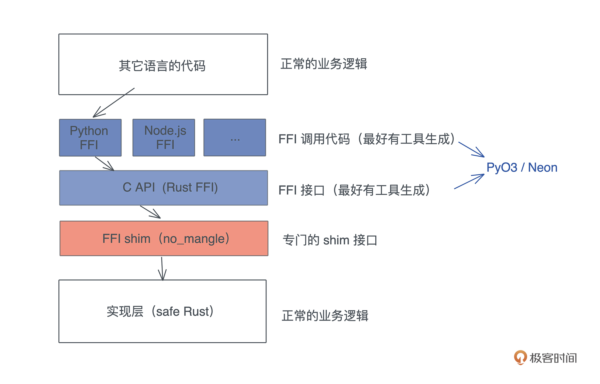
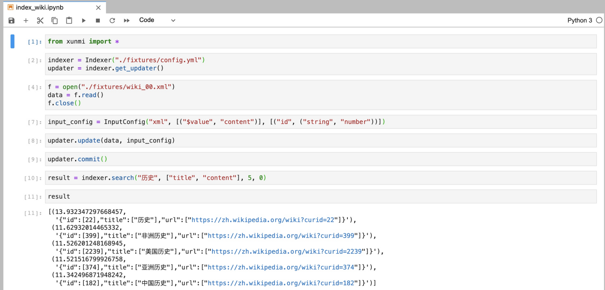

- 00 开篇词 让Rust成为你的下一门主力语言.md
- 01 内存：值放堆上还是放栈上，这是一个问题.md
- 02 串讲：编程开发中，那些你需要掌握的基本概念.md
- 03 初窥门径：从你的第一个Rust程序开始！.md
- 04 get hands dirty：来写个实用的CLI小工具.md
- 05 get hands dirty：做一个图片服务器有多难？.md
- 06 get hands dirty：SQL查询工具怎么一鱼多吃？.md
- 07 所有权：值的生杀大权到底在谁手上？.md
- 08 所有权：值的借用是如何工作的？.md
- 09 所有权：一个值可以有多个所有者么？.md
- 10 生命周期：你创建的值究竟能活多久？.md
- 11 内存管理：从创建到消亡，值都经历了什么？.md
- 12 类型系统：Rust的类型系统有什么特点？.md
- 13 类型系统：如何使用trait来定义接口？.md
- 14 类型系统：有哪些必须掌握的trait？.md
- 15 数据结构：这些浓眉大眼的结构竟然都是智能指针？.md
- 16 数据结构：Vec_T_、&[T]、Box_[T]_ ，你真的了解集合容器么？.md
- 17 数据结构：软件系统核心部件哈希表，内存如何布局？.md
- 18 错误处理：为什么Rust的错误处理与众不同？.md
- 19 闭包：FnOnce、FnMut和Fn，为什么有这么多类型？.md
- 20 4 Steps ：如何更好地阅读Rust源码？.md
- 21 阶段实操（1）：构建一个简单的KV server-基本流程.md
- 22 阶段实操（2）：构建一个简单的KV server-基本流程.md
- 23 类型系统：如何在实战中使用泛型编程？.md
- 24 类型系统：如何在实战中使用trait object？.md
- 25 类型系统：如何围绕trait来设计和架构系统？.md
- 26 阶段实操（3）：构建一个简单的KV server-高级trait技巧.md
- 27 生态系统：有哪些常有的Rust库可以为我所用？.md
- 28 网络开发（上）：如何使用Rust处理网络请求？.md
- 29 网络开发（下）：如何使用Rust处理网络请求？.md
- 30 Unsafe Rust：如何用C++的方式打开Rust？.md
- 31 FFI：Rust如何和你的语言架起沟通桥梁？.md
- 32 实操项目：使用PyO3开发Python3模块.md
- 33 并发处理（上）：从atomics到Channel，Rust都提供了什么工具？.md
- 34 并发处理（下）：从atomics到Channel，Rust都提供了什么工具？.md
- 35 实操项目：如何实现一个基本的MPSC channel？.md
- 36 阶段实操（4）：构建一个简单的KV server-网络处理.md
- 37 阶段实操（5）：构建一个简单的KV server-网络安全.md
- 38 异步处理：Future是什么？它和async_await是什么关系？.md
- 39 异步处理：async_await内部是怎么实现的？.md
- 40 异步处理：如何处理异步IO？.md
- 41 阶段实操（6）：构建一个简单的KV server-异步处理.md
- 42 阶段实操（7）：构建一个简单的KV server-如何做大的重构？.md
- 43 生产环境：真实世界下的一个Rust项目包含哪些要素？.md
- 44 数据处理：应用程序和数据如何打交道？.md
- 45 阶段实操（8）：构建一个简单的KV server-配置_测试_监控_CI_CD.md
- 46 软件架构：如何用Rust架构复杂系统？.md
- 加餐 Rust2021版次问世了！.md
- 加餐 代码即数据：为什么我们需要宏编程能力？.md
- 加餐 宏编程（上）：用最“笨”的方式撰写宏.md
- 加餐 宏编程（下）：用 syn_quote 优雅地构建宏.md
- 加餐 愚昧之巅：你的Rust学习常见问题汇总.md
- 加餐 期中测试：参考实现讲解.md
- 加餐 期中测试：来写一个简单的grep命令行.md
- 加餐 这个专栏你可以怎么学，以及Rust是否值得学？.md
- 大咖助场 开悟之坡（上）：Rust的现状、机遇与挑战.md
- 大咖助场 开悟之坡（下）：Rust的现状、机遇与挑战.md
- 特别策划 学习锦囊（一）：听听课代表们怎么说.md
- 特别策划 学习锦囊（三）：听听课代表们怎么说.md
- 特别策划 学习锦囊（二）：听听课代表们怎么说.md
- 用户故事 绝望之谷：改变从学习开始.md
- 用户故事 语言不仅是工具，还是思维方式.md
- 结束语 永续之原：Rust学习，如何持续精进？.md
32 实操项目：使用PyO3开发Python3模块
你好，我是陈天。
上一讲介绍了 FFI 的基本用法，今天我们就趁热打铁来做个实操项目，体验一下如何把 Rust 生态中优秀的库介绍到 Python/Node.js 的社区。
由于社区里已经有 PyO3 和 Neon 这样的工具，我们并不需要处理 Rust 代码兼容 C ABI 的细节，这些工具就可以直接处理。所以，今天会主要撰写 FFI shim 这一层的代码：- 
另外，PyO3和Neon的基本操作都是一样的，你会用一个，另一个的使用也就很容易理解了。这一讲我们就以 PyO3 为例。
那么，做个什么库提供给 Python 呢？
思来想去，我觉得 Python 社区里可以内嵌在程序中的搜索引擎，目前还是一块短板。我所知道的 whoosh 已经好多年没有更新了，pylucene 需要在 Python 里运行个 JVM，总是让人有种说不出的不舒服。虽然 Node.js 的 flexsearch 看上去还不错（我没有用过），但整体来说，这两个社区都需要有更强大的搜索引擎。
Rust 下，嵌入式的搜索引擎有 tantivy，我们就使用它来提供搜索引擎的功能。
不过，tanvity 的接口比较复杂，今天的主题也不是学习如何使用一个搜索引擎的接口，所以我做了基于 tanvity 的 crate xunmi，提供一套非常简单的接口，今天，我们的目标就是：为这些接口提供对应的 Python 接口，并且让使用起来的感觉和 Python 一致。
下面是 xunmi 用 Rust 调用的例子：
use std::{str::FromStr, thread, time::Duration};
use xunmi::*;
fn main() {
// 可以通过 yaml 格式的配置文件加载定义好的 schema
let config = IndexConfig::from_str(include_str!("../fixtures/config.yml")).unwrap();
// 打开或者创建 index
let indexer = Indexer::open_or_create(config).unwrap();
// 要 index 的数据，可以是 xml/yaml/json
let content = include_str!("../fixtures/wiki_00.xml");
// 我们使用的 wikipedia dump 是 xml 格式的，所以 InputType::Xml
// 这里，wikipedia 的数据结构 id 是字符串，但 index 的 schema 里是 u64
// wikipedia 里没有 content 字段，节点的内容（$value）相当于 content
// 所以我们需要对数据定义一些格式转换
let config = InputConfig::new(
InputType::Xml,
vec![("$value".into(), "content".into())],
vec![("id".into(), (ValueType::String, ValueType::Number))],
);
// 获得 index 的 updater，用于更新 index
let mut updater = indexer.get_updater();
// 你可以使用多个 updater 在不同上下文更新同一个 index
let mut updater1 = indexer.get_updater();
// 可以通过 add/update 来更新 index，add 直接添加，update 会删除已有的 doc
// 然后添加新的
updater.update(content, &config).unwrap();
// 你可以添加多组数据，最后统一 commit
updater.commit().unwrap();
// 在其他上下文下更新 index
thread::spawn(move || {
let config = InputConfig::new(InputType::Yaml, vec![], vec![]);
let text = include_str!("../fixtures/test.yml");
updater1.update(text, &config).unwrap();
updater1.commit().unwrap();
});
// indexer 默认会自动在每次 commit 后重新加载，但这会有上百毫秒的延迟
// 在这个例子里我们会等一段时间再查询
while indexer.num_docs() == 0 {
thread::sleep(Duration::from_millis(100));
}
println!("total: {}", indexer.num_docs());
// 你可以提供查询来获取搜索结果
let result = indexer.search("历史", &["title", "content"], 5, 0).unwrap();
for (score, doc) in result.iter() {
// 因为 schema 里 content 只索引不存储，所以输出里没有 content
println!("score: {}, doc: {:?}", score, doc);
}
}
以下是索引的配置文件的样子：
---
path: /tmp/searcher_index # 索引路径
schema: # 索引的 schema，对于文本，使用 CANG_JIE 做中文分词
- name: id
type: u64
options:
indexed: true
fast: single
stored: true
- name: url
type: text
options:
indexing: ~
stored: true
- name: title
type: text
options:
indexing:
record: position
tokenizer: CANG_JIE
stored: true
- name: content
type: text
options:
indexing:
record: position
tokenizer: CANG_JIE
stored: false # 对于 content，我们只索引，不存储
text_lang:
chinese: true # 如果是 true，自动做繁体到简体的转换
writer_memory: 100000000
目标是，使用 PyO3 让 Rust 代码可以这样在 Python 中使用：- 
好，废话不多说，我们开始今天的项目挑战。
首先 cargo new xunmi-py --lib 创建一个新的项目，在 Cargo.toml 中添入：
[package]
name = "xunmi-py"
version = "0.1.0"
edition = "2021"
[lib]
name = "xunmi"
crate-type = ["cdylib"]
[dependencies]
pyo3 = {version = "0.14", features = ["extension-module"]}
serde_json = "1"
xunmi = "0.2"
[build-dependencies]
pyo3-build-config = "0.14"
要定义好 lib 的名字和类型。lib 的名字，我们就定义成 xunmi，这样在 Python 中 import 时就用这个名称；crate-type 是 cdylib，我们需要 pyo3-build-config 这个 crate 来做编译时的一些简单处理（macOS 需要）。
准备工作
接下来在写代码之前，还要做一些准备工作，主要是 build 脚本和 Makefile，让我们能方便地生成 Python 库。
创建 build.rs，并添入：
fn main() {
println!("cargo:rerun-if-changed=build.rs");
pyo3_build_config::add_extension_module_link_args();
}
它会在编译的时候添加一些编译选项。如果你不想用 build.rs 来额外处理，也可以创建 .cargo/config，然后添加：
[target.x86_64-apple-darwin]
rustflags = [
"-C", "link-arg=-undefined",
"-C", "link-arg=dynamic_lookup",
]
二者的作用是等价的。
然后我们创建一个目录 xunmi，再创建 xunmi/init.py，添入：
from .xunmi import *
最后创建一个 Makefile，添入：
# 如果你的 BUILD_DIR 不同，可以 make BUILD_DIR=<your-dir>
BUILD_DIR := target/release
SRCS := $(wildcard src/*.rs) Cargo.toml
NAME = xunmi
TARGET = lib$(NAME)
BUILD_FILE = $(BUILD_DIR)/$(TARGET).dylib
BUILD_FILE1 = $(BUILD_DIR)/$(TARGET).so
TARGET_FILE = $(NAME)/$(NAME).so
all: $(TARGET_FILE)
test: $(TARGET_FILE)
python3 -m pytest
$(TARGET_FILE): $(BUILD_FILE1)
@cp $(BUILD_FILE1) $(TARGET_FILE)
$(BUILD_FILE1): $(SRCS)
@cargo build --release
@mv $(BUILD_FILE) $(BUILD_FILE1)|| true
PHONY: test all
这个 Makefile 可以帮我们自动化一些工作，基本上，就是把编译出来的 .dylib 或者 .so 拷贝到 xunmi 目录下，被 python 使用。
撰写代码
接下来就是如何撰写 FFI shim 代码了。PyO3 为我们提供了一系列宏，可以很方便地把 Rust 的数据结构、函数、数据结构的方法，以及错误类型，映射成 Python 的类、函数、类的方法，以及异常。我们来一个个看。
将 Rust struct 注册为 Python class
之前在[第 6 讲]，我们简单介绍了函数是如何被引入到 pymodule 中的：
use pyo3::{exceptions, prelude::*};
#[pyfunction]
pub fn example_sql() -> PyResult<String> {
Ok(queryer::example_sql())
}
#[pyfunction]
pub fn query(sql: &str, output: Option<&str>) -> PyResult<String> {
let rt = tokio::runtime::Runtime::new().unwrap();
let data = rt.block_on(async { queryer::query(sql).await.unwrap() });
match output {
Some("csv") | None => Ok(data.to_csv().unwrap()),
Some(v) => Err(exceptions::PyTypeError::new_err(format!(
"Output type {} not supported",
v
))),
}
}
#[pymodule]
fn queryer_py(_py: Python, m: &PyModule) -> PyResult<()> {
m.add_function(wrap_pyfunction!(query, m)?)?;
m.add_function(wrap_pyfunction!(example_sql, m)?)?;
Ok(())
}
使用了 #[pymodule] 宏，来提供 python module 入口函数，它负责注册这个 module 下的类和函数。通过 m.add_function 可以注册函数，之后，在 Python 里就可以这么调用：
import queryer_py
queryer_py.query("select * from file:///test.csv")
但当时我们想暴露出来的接口功能很简单，让用户传入一个 SQL 字符串和输出类型的字符串，返回一个按照 SQL 查询处理过的、符合输出类型的字符串。所以为 Python 模块提供了两个接口 example_sql 和 query。
不过，我们今天要做的事情远比第 6 讲中对 PyO3 的使用复杂。比如说要在两门语言中传递数据结构，让 Python 类可以使用 Rust 方法等，所以需要注册一些类以及对应的类方法。
看上文使用截图中的一些代码（复制到这里了）：
from xunmi import *
indexer = Indexer("./fixtures/config.yml")
updater = indexer.get_updater()
f = open("./fixtures/wiki_00.xml")
data = f.read()
f.close()
input_config = InputConfig("xml", [("$value", "content")], [("id", ("string", "number"))])
updater.update(data, input_config)
updater.commit()
result = indexer.search("历史", ["title", "content"], 5, 0)
你会发现，我们需要注册 Indexer、IndexUpdater 和 InputConfig 这三个类，它们都有自己的成员函数，其中，Indexer 和 InputConfig 还要有类的构造函数。
但是因为 xunmi 是 xunmi-py 外部引入的一个 crate，我们无法直接动 xunmi 的数据结构，把这几个类注册进去。怎么办？我们需要封装一下：
use pyo3::{exceptions, prelude::*};
use xunmi::{self as x};
#[pyclass]
pub struct Indexer(x::Indexer);
#[pyclass]
pub struct InputConfig(x::InputConfig);
#[pyclass]
pub struct IndexUpdater(x::IndexUpdater);
这里有个小技巧，可以把 xunmi 的命名空间临时改成 x，这样，xunmi 自己的结构用 x:: 来引用，就不会有命名的冲突了。
有了这三个定义，我们就可以通过 m.add_class 把它们引入到模块中：
#[pymodule]
fn xunmi(_py: Python, m: &PyModule) -> PyResult<()> {
m.add_class::<Indexer>()?;
m.add_class::<InputConfig>()?;
m.add_class::<IndexUpdater>()?;
Ok(())
}
注意，这里的函数名要和 crate lib name 一致，如果你没有定义 lib name，默认会使用 crate name。我们为了区别，crate name 使用了 “xunmi-py”，所以前面在 Cargo.toml 里，会单独声明一下 lib name：
[lib]
name = "xunmi"
crate-type = ["cdylib"]
把 struct 的方法暴露成 class 的方法
注册好Python的类，继续写功能的实现，基本上是 shim 代码，也就是把 xunmi 里对应的数据结构的方法暴露给 Python。先看个简单的，IndexUpdater 的实现：
#[pymethods]
impl IndexUpdater {
pub fn add(&mut self, input: &str, config: &InputConfig) -> PyResult<()> {
Ok(self.0.add(input, &config.0).map_err(to_pyerr)?)
}
pub fn update(&mut self, input: &str, config: &InputConfig) -> PyResult<()> {
Ok(self.0.update(input, &config.0).map_err(to_pyerr)?)
}
pub fn commit(&mut self) -> PyResult<()> {
Ok(self.0.commit().map_err(to_pyerr)?)
}
pub fn clear(&self) -> PyResult<()> {
Ok(self.0.clear().map_err(to_pyerr)?)
}
}
首先，需要用 #[pymethods] 来包裹 impl IndexUpdater {}，这样，里面所有的 pub 方法都可以在 Python 侧使用。我们暴露了 add/update/commit/clear 这几个方法。方法的类型签名正常撰写即可，Rust 的基本类型都能通过 PyO3 对应到 Python，使用到的 InputConfig 之前也注册成 Python class 了。
所以，通过这些方法，一个 Python 用户就可以轻松地在 Python 侧生成字符串，生成 InputConfig 类，然后传给 update() 函数，交给 Rust 侧处理。比如这样：
f = open("./fixtures/wiki_00.xml")
data = f.read()
f.close()
input_config = InputConfig("xml", [("$value", "content")], [("id", ("string", "number"))])
updater.update(data, input_config)
错误处理
还记得上一讲强调的三个要点吗，在写FFI的时候要注意Rust的错误处理。这里，所有函数如果要返回 Result<T, E>，需要使用 PyResult
我们可以用 map_err 处理，其中 to_pyerr 实现如下：
pub(crate) fn to_pyerr<E: ToString>(err: E) -> PyErr {
exceptions::PyValueError::new_err(err.to_string())
}
通过使用 PyO3 提供的 PyValueError，在 Rust 侧生成的 err，会被 PyO3 转化成 Python 侧的异常。比如我们在创建 indexer 时提供一个不存在的 config：
In [3]: indexer = Indexer("./fixtures/config.ymla")
---------------------------------------------------------------------------
ValueError Traceback (most recent call last)
<ipython-input-3-bde6b0e501ea> in <module>
----> 1 indexer = Indexer("./fixtures/config.ymla")
ValueError: No such file or directory (os error 2)
即使你在 Rust 侧使用了 panic!，PyO3 也有很好的处理：
In [3]: indexer = Indexer("./fixtures/config.ymla")
---------------------------------------------------------------------------
PanicException Traceback (most recent call last)
<ipython-input-11-082d933e67e2> in <module>
----> 1 indexer = Indexer("./fixtures/config.ymla")
2 updater = indexer.get_updater()
PanicException: called `Result::unwrap()` on an `Err` value: Os { code: 2, kind: NotFound, message: "No such file or directory" }
它也是在 Python 侧抛出一个异常。
构造函数
好，接着看 Indexer 怎么实现：
#[pymethods]
impl Indexer {
// 创建或载入 index
#[new]
pub fn open_or_create(filename: &str) -> PyResult<Indexer> {
let content = fs::read_to_string(filename).unwrap();
let config = x::IndexConfig::from_str(&content).map_err(to_pyerr)?;
let indexer = x::Indexer::open_or_create(config).map_err(to_pyerr)?;
Ok(Indexer(indexer))
}
// 获取 updater
pub fn get_updater(&self) -> IndexUpdater {
IndexUpdater(self.0.get_updater())
}
// 搜索
pub fn search(
&self,
query: String,
fields: Vec<String>,
limit: usize,
offset: Option<usize>,
) -> PyResult<Vec<(f32, String)>> {
let default_fields: Vec<_> = fields.iter().map(|s| s.as_str()).collect();
let data: Vec<_> = self
.0
.search(&query, &default_fields, limit, offset.unwrap_or(0))
.map_err(to_pyerr)?
.into_iter()
.map(|(score, doc)| (score, serde_json::to_string(&doc).unwrap()))
.collect();
Ok(data)
}
// 重新加载 index
pub fn reload(&self) -> PyResult<()> {
self.0.reload().map_err(to_pyerr)
}
}
你看，我们可以用 #[new] 来标记要成为构造函数的方法，所以，在 Python 侧，当你调用：
indexer = Indexer("./fixtures/config.yml")
其实，它在 Rust 侧就调用了 open_or_crate 方法。把某个用来构建数据结构的方法，标记为一个构造函数，可以让 Python 用户感觉用起来更加自然。
缺省参数
好，最后来看看缺省参数的实现。Python 支持缺省参数，但 Rust 不支持缺省参数，怎么破？
别着急，PyO3 巧妙使用了 Option
#[pymethods]
impl InputConfig {
#[new]
fn new(
input_type: String,
mapping: Option<Vec<(String, String)>>,
conversion: Option<Vec<(String, (String, String))>>,
) -> PyResult<Self> {
let input_type = match input_type.as_ref() {
"yaml" | "yml" => x::InputType::Yaml,
"json" => x::InputType::Json,
"xml" => x::InputType::Xml,
_ => return Err(exceptions::PyValueError::new_err("Invalid input type")),
};
let conversion = conversion
.unwrap_or_default()
.into_iter()
.filter_map(|(k, (t1, t2))| {
let t = match (t1.as_ref(), t2.as_ref()) {
("string", "number") => (x::ValueType::String, x::ValueType::Number),
("number", "string") => (x::ValueType::Number, x::ValueType::String),
_ => return None,
};
Some((k, t))
})
.collect::<Vec<_>>();
Ok(Self(x::InputConfig::new(
input_type,
mapping.unwrap_or_default(),
conversion,
)))
}
}
这段代码是典型的 shim 代码，它就是把接口包装成更简单的形式提供给 Python，然后内部做转换适配原本的接口。
在 Python 侧，当 mapping 或 conversion 不需要时，可以不提供。这里我们使用 unwrap_or_default() 来得到缺省值（对 Vecvec![]）。这样，在 Python 侧这么调用都是合法的：
input_config = InputConfig("xml", [("$value", "content")], [("id", ("string", "number"))])
input_config = InputConfig("xml", [("$value", "content")])
input_config = InputConfig("xml")
完整代码
好了，到这里今天的主要目标就基本完成啦。 xunmi-py 里 src/lib.rs 的完整代码也展示一下供你对比参考：
use pyo3::{
exceptions,
prelude::*,
types::{PyDict, PyTuple},
};
use std::{fs, str::FromStr};
use xunmi::{self as x};
pub(crate) fn to_pyerr<E: ToString>(err: E) -> PyErr {
exceptions::PyValueError::new_err(err.to_string())
}
#[pyclass]
pub struct Indexer(x::Indexer);
#[pyclass]
pub struct InputConfig(x::InputConfig);
#[pyclass]
pub struct IndexUpdater(x::IndexUpdater);
#[pymethods]
impl Indexer {
#[new]
pub fn open_or_create(filename: &str) -> PyResult<Indexer> {
let content = fs::read_to_string(filename).map_err(to_pyerr)?;
let config = x::IndexConfig::from_str(&content).map_err(to_pyerr)?;
let indexer = x::Indexer::open_or_create(config).map_err(to_pyerr)?;
Ok(Indexer(indexer))
}
pub fn get_updater(&self) -> IndexUpdater {
IndexUpdater(self.0.get_updater())
}
pub fn search(
&self,
query: String,
fields: Vec<String>,
limit: usize,
offset: Option<usize>,
) -> PyResult<Vec<(f32, String)>> {
let default_fields: Vec<_> = fields.iter().map(|s| s.as_str()).collect();
let data: Vec<_> = self
.0
.search(&query, &default_fields, limit, offset.unwrap_or(0))
.map_err(to_pyerr)?
.into_iter()
.map(|(score, doc)| (score, serde_json::to_string(&doc).unwrap()))
.collect();
Ok(data)
}
pub fn reload(&self) -> PyResult<()> {
self.0.reload().map_err(to_pyerr)
}
}
#[pymethods]
impl IndexUpdater {
pub fn add(&mut self, input: &str, config: &InputConfig) -> PyResult<()> {
self.0.add(input, &config.0).map_err(to_pyerr)
}
pub fn update(&mut self, input: &str, config: &InputConfig) -> PyResult<()> {
self.0.update(input, &config.0).map_err(to_pyerr)
}
pub fn commit(&mut self) -> PyResult<()> {
self.0.commit().map_err(to_pyerr)
}
pub fn clear(&self) -> PyResult<()> {
self.0.clear().map_err(to_pyerr)
}
}
#[pymethods]
impl InputConfig {
#[new]
fn new(
input_type: String,
mapping: Option<Vec<(String, String)>>,
conversion: Option<Vec<(String, (String, String))>>,
) -> PyResult<Self> {
let input_type = match input_type.as_ref() {
"yaml" | "yml" => x::InputType::Yaml,
"json" => x::InputType::Json,
"xml" => x::InputType::Xml,
_ => return Err(exceptions::PyValueError::new_err("Invalid input type")),
};
let conversion = conversion
.unwrap_or_default()
.into_iter()
.filter_map(|(k, (t1, t2))| {
let t = match (t1.as_ref(), t2.as_ref()) {
("string", "number") => (x::ValueType::String, x::ValueType::Number),
("number", "string") => (x::ValueType::Number, x::ValueType::String),
_ => return None,
};
Some((k, t))
})
.collect::<Vec<_>>();
Ok(Self(x::InputConfig::new(
input_type,
mapping.unwrap_or_default(),
conversion,
)))
}
}
#[pymodule]
fn xunmi(_py: Python, m: &PyModule) -> PyResult<()> {
m.add_class::<Indexer>()?;
m.add_class::<InputConfig>()?;
m.add_class::<IndexUpdater>()?;
Ok(())
}
整体的代码除了使用了一些 PyO3 提供的宏，没有什么特别之处，就是把 xunmi crate 的接口包装了一下（Indexer/InputConfig/IndexUpdater），然后把它们呈现在 pymodule 中。
你可以去这门课的 GitHub repo 里，下载可以用于测试的 fixtures，以及 Jupyter Notebook（index_wiki.ipynb）。
如果要测试 Python 代码，请运行 make，这样会编译出一个 release 版本的 .so 放在 xunmi 目录下，之后你就可以在 ipython 或者 jupyter-lab 里 from xunmi import * 来使用了。当然，你也可以使用第 6 讲介绍的 maturin 来测试和发布。
One more thing
作为一个 Python 老手，你可能会问，如果在 Python 侧，我要传入 *args（变长参数） 或者 **kwargs（变长字典）怎么办？这可是 Python 的精髓啊！别担心，pyo3 提供了对应的 PyTuple/PyDict 类型，以及相应的宏。
我们可以这么写：
use pyo3::types::{PyDict, PyTuple};
#[pyclass]
struct MyClass {}
#[pymethods]
impl MyClass {
#[staticmethod]
#[args(kwargs = "**")]
fn test1(kwargs: Option<&PyDict>) -> PyResult<()> {
if let Some(kwargs) = kwargs {
for kwarg in kwargs {
println!("{:?}", kwarg);
}
} else {
println!("kwargs is none");
}
Ok(())
}
#[staticmethod]
#[args(args = "*")]
fn test2(args: &PyTuple) -> PyResult<()> {
for arg in args {
println!("{:?}", arg);
}
Ok(())
}
}
感兴趣的同学可以尝试一下（记得要 m.add_class 注册一下）。下面是运行结果：
In [6]: MyClass.test1()
kwargs is none
In [7]: MyClass.test1(a=1, b=2)
('a', 1)
('b', 2)
In [8]: MyClass.test2(1,2,3)
1
2
3
小结
PyO3 是一个非常成熟的让 Python 和 Rust 互操作的库。很多 Rust 的库都是通过 PyO3 被介绍到 Python 社区的。所以如果你是一名 Python 开发者，喜欢在 Jupyter Notebook 上开发，不妨把一些需要高性能的库用 Rust 实现。其实 tantivy 也有自己的 tantivy-py，你也可以看看它的实现源码。
当然啦，这一讲我们对 PyO3 的使用也仅仅是冰山一角。PyO3 还允许你在 Rust 下调用 Python 代码。
比如你可以提供一个库给 Python，让 Python 调用这个库的能力。在需要的时候，这个库还可以接受一个来自 Python 的闭包函数，让 Python 用户享受到 Rust 库的高性能之外，还可以拥有足够的灵活性。我们之前使用过的 polars 就有不少这样 Rust 和 Python 的深度交互。感兴趣的同学可以看看它的代码。
思考题
今天我们实现了 xunmi-py，按照类似的思路，你可以试着边看 neon 的文档，边实现一个 xunmi-js，让它也可以被用在 Node.js 社区。
欢迎在留言区分享讨论。感谢你的收听，今天你完成了第32次Rust打卡啦，继续坚持。我们下节课见～
© 2019 - 2023 Liangliang Lee. Powered by Vert.x and hexo-theme-book.